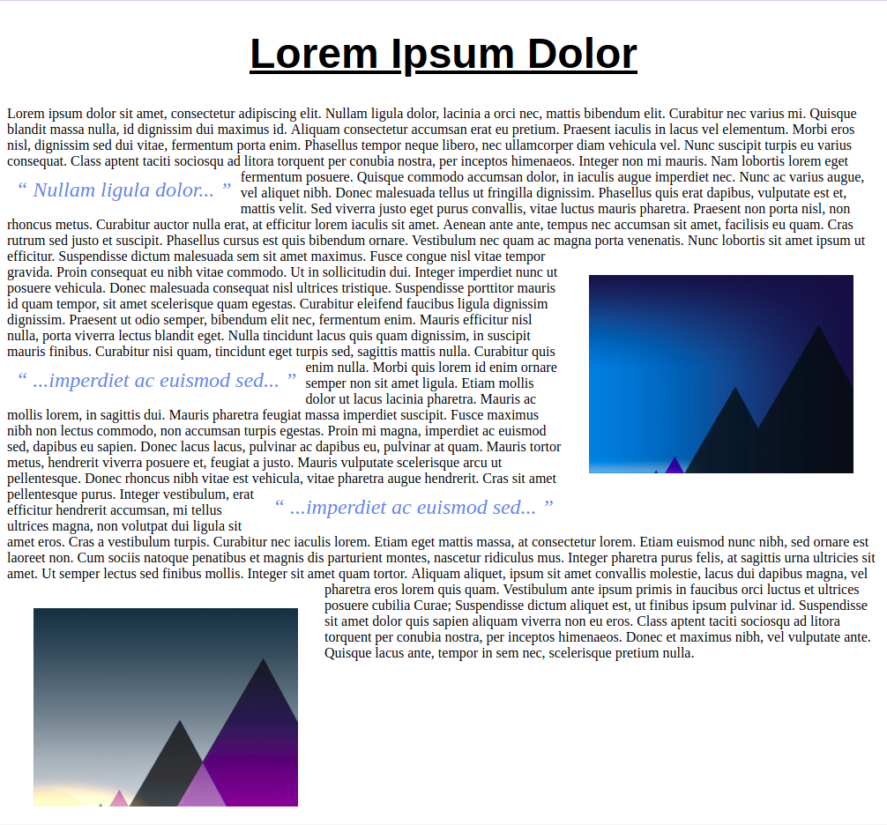
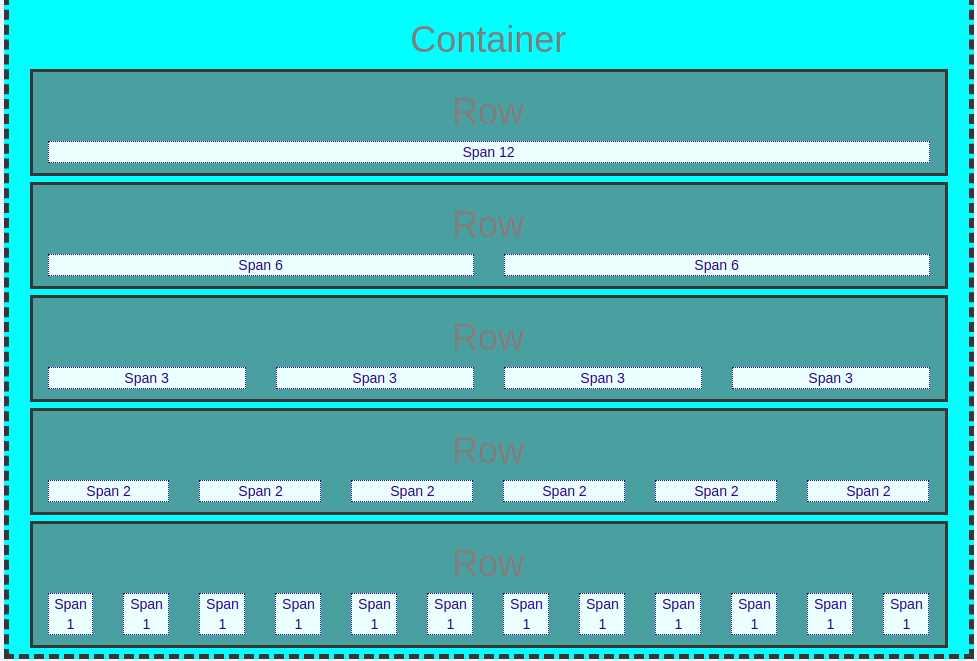
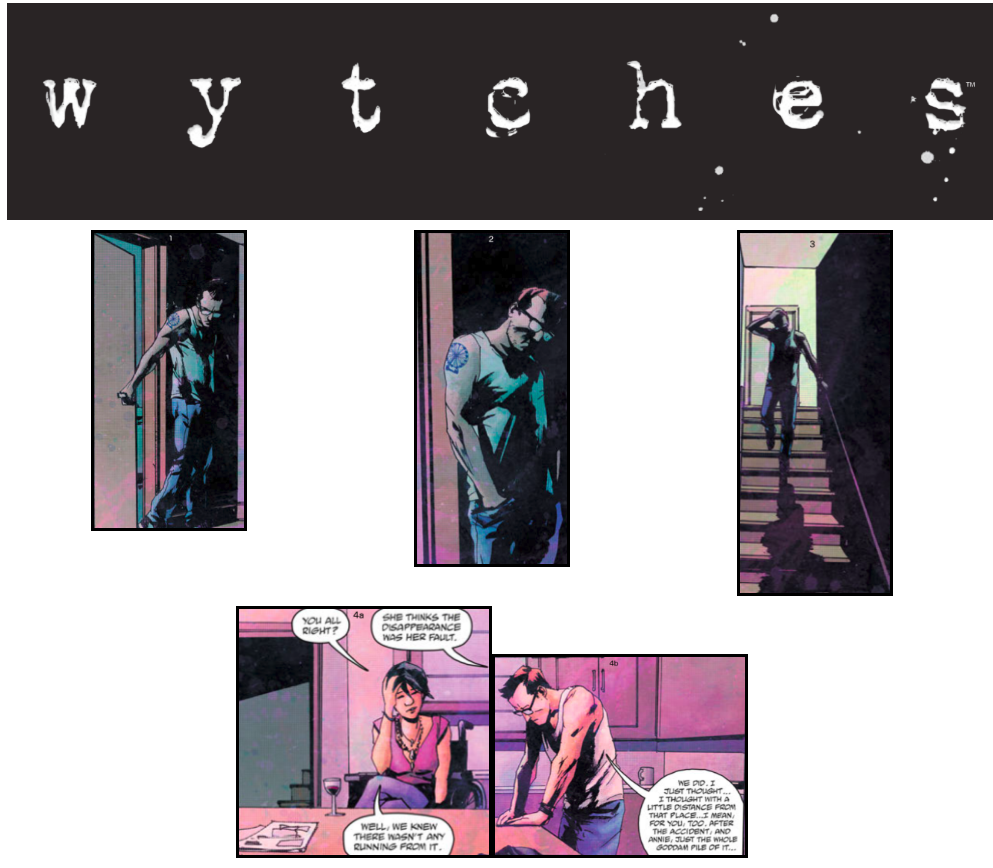
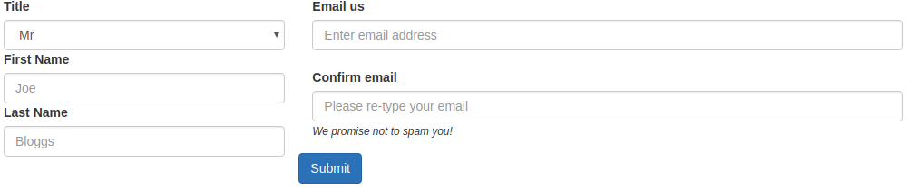
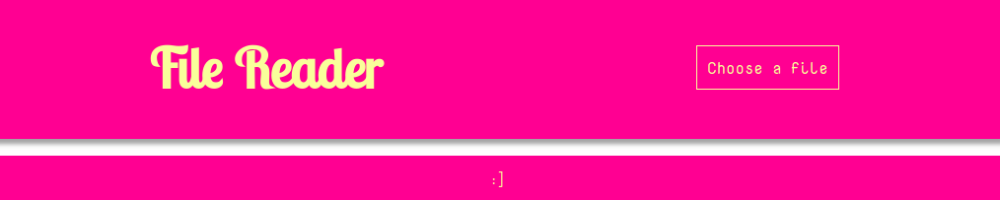
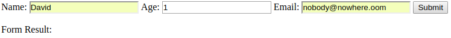
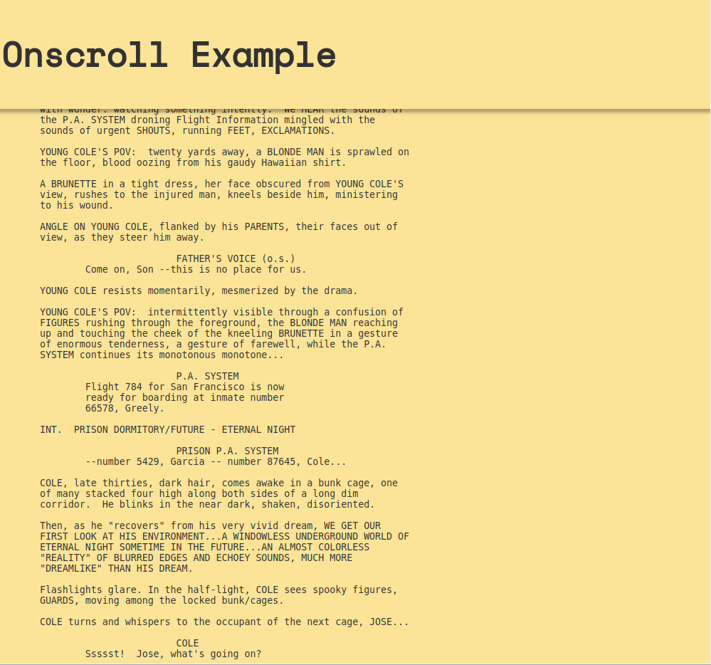
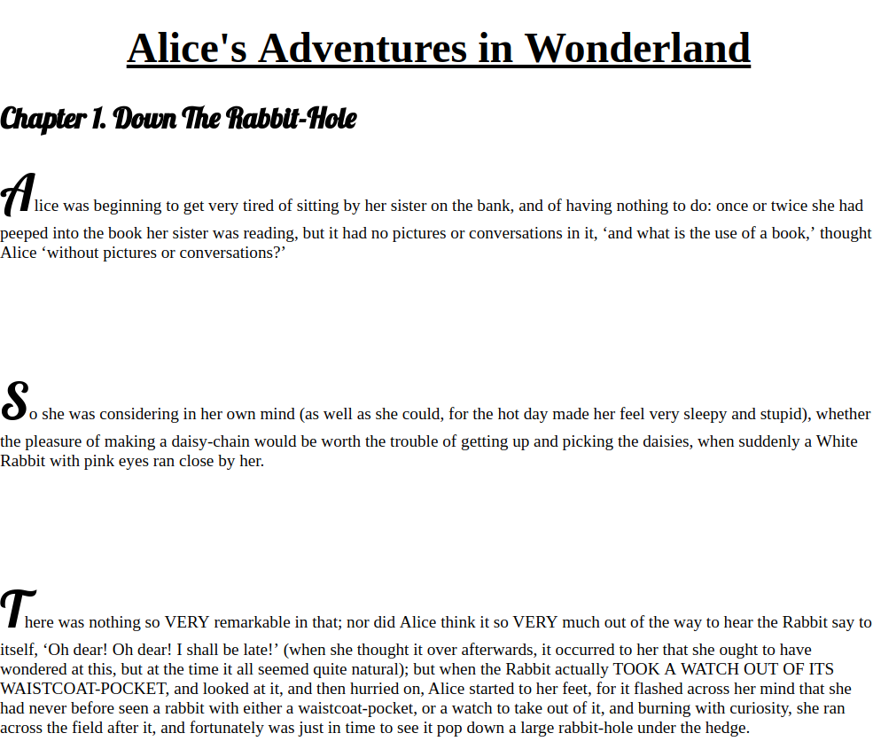
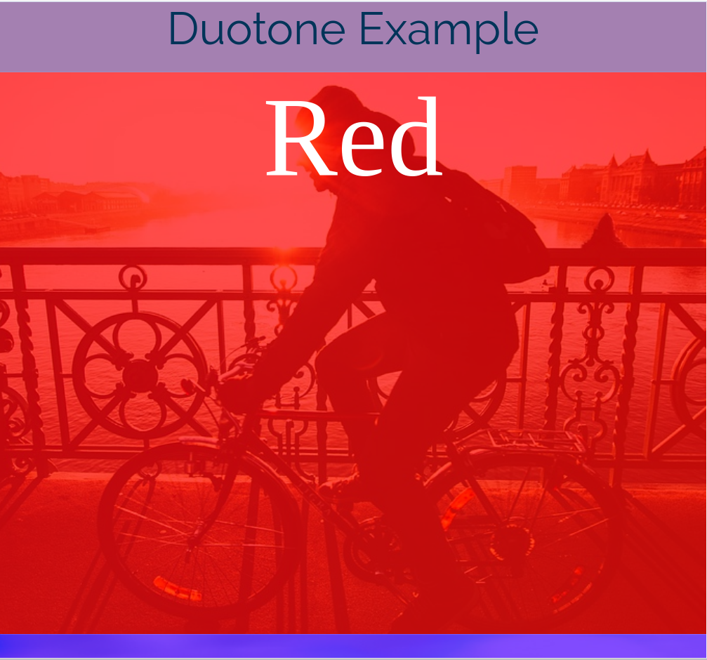
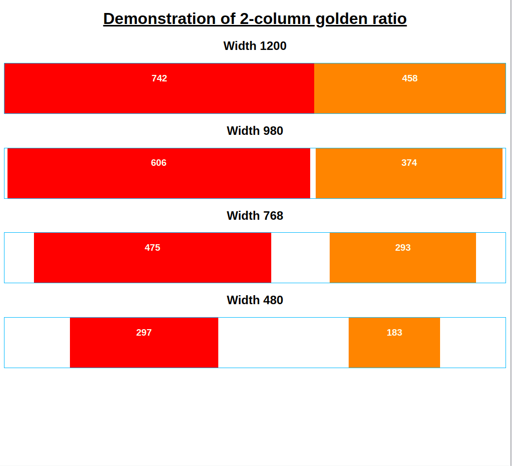

Digital Illustration
| Audience | Young Adults, Adults |
|---|---|
| Level | Foundation deg |
| Discipline | Programming, Design |
| Topics | HTML, CSS, JavaScript, JQuery, Design, Bootstrap, UX |
This page contains links to archives of my web design lessons I created for the web portion of a foundation degree. Each archive contains a PowerPoint presentation, step-by-step examples and some contain challenge examples as well. It should be accessible for students beginning with zero knowledge.
1. HTML & CSS

This first lesson covers the basics of HTML and CSS. This stuff is essential to know before diving into the rest of the material on this page. There is also a short introduction to the application, Brackets, if required. It will probably take more than one lesson to get through thoroughly.
2. Float & Clear
Lesson 2 introduces some dynamic design elements. It uses float and clear to control content layout.
3. Bootstrap
This lesson introduces Bootstrap. It touches upon the concept, uses and origins of Boostrap layout.
4. Flexbox
Here, we extend our knowledge of dynamic design and layout further using Flexbox. The end goal of this lesson is to create a dynamic page that remains coherent at any browser width.
Fonts can make or break a design. In this lesson we look at two different ways of incorporating fonts into a web page.
This lesson builds upon lesson 5. It focusses on media queries to aid page responsiveness.
7. Forms
A form can be an extremely useful device to allow site creators to gather data and consumers of the site to make contact.
8. Text Files
It is sometimes necessary to display a text file somewhere on your web page. This lessons explores how you can do that.
9. Validation
This lesson walks through validating data entered into a form using JavaScript.
10. Onscroll
Onscroll is frequently used on web pages to trigger an action like collapsing a menu. Here, we take a look at this useful method.
11. Pseudo Elements
A lesson on pseudo elements - what are they and how can they be used.
12. Duotone
This lesson extends lesson 11 by exploring duotone applied to images. This can add some interesting and sometimes bold aesthetic to a design.
13. User Experience
Finally, lucky 13, relaxes into breakpoints and touches on good user experience.